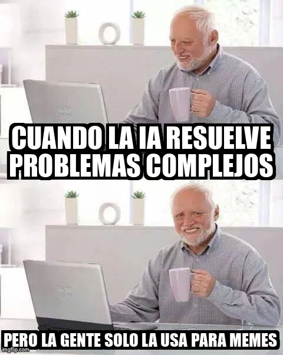

estrategIA #5 ·
Toda esa potencia para memes
El contexto
La sonrisa incómoda del personaje contrapone la capacidad atribuida a la IA para resolver problemas complejos con uno de sus usos más cotidianos: hacer memes. La pieza cierra con humor un número dedicado a inventos y aplicaciones tecnológicas.
Publicado en: estrategIA #5 - Los inventos de IA elegidos por Time en 2023
Leer el texto de la imagen
CUANDO LA IA RESUELVE PROBLEMAS COMPLEJOS PERO LA GENTE SOLO LA USA PARA MEMES
Marca de la herramienta visible en el original: imgflip.com.